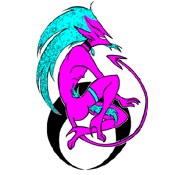

Curriculum Vitae

Datos personales
- Nombre: Nicolás Eduardo Cuevas Montenegro
- RUT: 16.931.403-9
- Fecha de nacimiento: 22 de Abril de 1988
- Estado civil: Soltero
- Teléfono Móvil: +569 96932 666
- E-mail: nicolas.cuevas.m@gmail.com
- Web nicofideos.wordpress.com
Antededentes laborales
- Operario en línea de producción, empresa Cristalerías Chile (2006 - 2007)
- Manipulador de alimentos y ayudante de cocina, comida rápida Tommy beans (2010 - 2011)
- Operario de bodega y encargado de inventario, bodegas Cellstar (2011 - 2012)
- Cajero de estacionamiento, edificio San Francisco (2012 - 2014)
- Digitador de documentos, Paseo Bulnes (2015 - 2016)
- Manipulador de alimentos y repartidor, Papa Johns (2019 - 2020)
- Armado de luminarias, Aladdin (2020 - 2021)
- Reponer nocturno supermecados Lider (2021 - 2022)
Antededentes laborales artísticos
- Ayudantías de Computación gráfica niveles, Instituto A.L.P.E.S.(2008 - 2009)
- Organizador de eventos culturales en bibliotecas públicas (2011 - 2016)
- Tallerista en bibliotecas públicas (2011 - 2016)
- Dibujante y storyboard para animación en estudio de animación Gong! (2014 - 2019)
- Productor general y directiva en estudio de animación NeoGong! (2017 - 2019)
- Director del videojuego Recuperando el tesoro más misterioso ¡del mundo! (2018 - 2019)
Antededentes profesionales
- Titulado de ilustración artística, Instituto A.L.P.E.S. año 2012
- Ganador del fondo nacional del libro y la lectura del CNCA del gobierno de Chile,
convocatorias 2013, 2014, 2015 y 2017.
Y el fondo audiovisual del CNCA, línea videojuego
narrativo convocatoria 2017